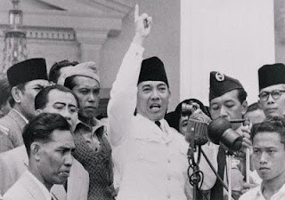
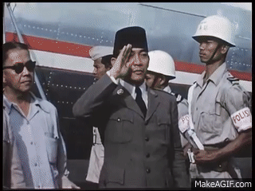

BAB V
Tokoh Nasional Indonesia
1. Soekarno (1901-1970)
Soekarno (atau Bung Karno bagi rekannya) lahir di Blitar pada 6 Juni 1901 kepada ayah Raden Soekemi Sosrodihardjo dan ibu Ida Ayu Nyoman Rai. Beliau banyak menghabiskan di Surabaya untuk pendidikannya. Riwayat pendidikannya, yaitu:
 Beliau kemudian bergabung dengan Partai Indonesia (Partindo), tetapi ditangkap lagi pada 1933 dan dibuang ke Ende (Flores), lalu dipindahkan ke Bengkulu. Soekarno baru kembali bebas pada masa penjajahan Jepang, 1942. Dari 1942 hingga 1945, Soekarno sempat memimpin organisasi Pusat Tenaga Rakyat (Putera) bersama dan menjadi ketua Cuo Sangi In (Dewan Penasihat Pusat). Dalam keadaan seperti itu, Soekarno terpaksa harus bekerja sama dengan Jepang. Setelah Jepang menyerah tanpa syarat, pada 17 Agustus 1945, Soekarno bersama Moh. Hatta memproklamasikan Kemerdekaan Indonesia. Peristiwa ini melahirkan sebutan Soekarno sebagai Bapak Proklamator. Keesokan harinya, dalam sidang PPKI, Soekarno diangkat menjadi presiden RI yang pertama. Salah satu aktivitas fenomenal yang berhasil dilaksanakan Presiden Soekarno adalah menghimpun bangsa-bangsa di Asia dan Afrika dalam Konferensi Asia-Afrika (1955). 
Pada akhir masa Demokrasi Terpimpin, karier Soekarno mulai meredup. Sejak Agustus 1965, kesehatan beliau mulai menurun dan menjalani perawatan rumah sakit beberapa kali di dalam dan luar negeri. Pada 21 Juni 1970, Soekarno wafat dan jenazah beliau dimakamkan di kota Blitar. |